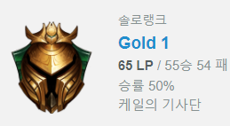

2022년 3월 14일 기준 55승 54패를 기록하여 골드 1 65pt에 랭크함. 랭크에 환멸을 느끼고 그 관심이 사라진 줄 알았으나
은밀하게 진행한 솔로랭크 전적이 목격되며 세간의 이목이 집중됨. 앞으로 플래티넘으로의 향방이 한 치 앞을 내다볼 수
없는 바 많은 이들이 그 결과를 기대하고 있음. 그러나 아직 시즌이 끝나기까지는 한참 남았음. 이전에 플래티넘에 주차를
거부하고 스스로 골드로 뛰어내린 전적이 있는 흥행몬에게 있어서는 시즌 말에 플래로 승격하는 것이 이득일지도 모른다는
분석이 존재함.
성장형 정글러인 그레이브즈를 잘 다루는 편. 기존에 정글러로서 훌륭한 자질을 자르반, 우디르 등을 통해 보인적있음.
그러나 그레이브즈의 승률은 이번 시즌 50퍼ㅋ
예전부터 원거리 딜러 중 특히나 이즈리얼을 잘 다루는 모습을 보인 바 있음. 그러나 서포터와의 갈등이 매우 잦은 편이고,
오히려 홀로 방치되었을 때 진가를 발휘하는 특이형 원딜러라고 할 수 있음.